This document outlines the design of the KnowledgeHubV2 application, including its architecture and data model.
The application follows a layered architecture designed for a client-side Blazor WebAssembly environment. It prioritizes in-memory performance while providing file-based persistence controlled by the user.
StateContainer): A central state container service is used to manage UI state, such as selections and drag-and-drop operations. It uses events to notify components of changes, decoupling them from one another.NoteRepository: Manages all CRUD (Create, Read, Update, Delete) operations for notes, folders, and tables.ReferenceProcessingService: Parses note content to find and replace dynamic data references (e.g., {{Table.Column.sum}}).LocalBackupService: Handles the import and export of user data to/from JSON files, with optional encryption.DatabaseStateService: Manages the lifecycle of the application's data, which is stored in an in-memory SQLite database. It handles creating a new database, loading an existing .db file from the user's disk, and saving the in-memory database back to a file.ApplicationDbContext: An Entity Framework Core DbContext that defines the database schema and facilitates interaction with the in-memory database. It also automatically manages CreatedAt and UpdatedAt timestamps for all entities.FileSystemService: A service that abstracts JavaScript interop calls to the browser's File System Access API, allowing the application to read and write files on the user's local machine with their permission.The following diagram illustrates the flow of control and data between the major components of the application.
The data model is defined using C# classes that are mapped to tables in the SQLite database by Entity Framework Core.
